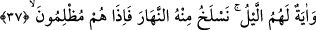
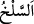

Ziyâfet zamanı gelince padişahı çorak bir yere dâvet etti. Bunun üzerine padişah:
“Burası misafir ağırlanacak yer mi?” dedi. Vezir: “Burada kimsenin çalışması ve emeği
olmadan hâsıl olmuş güzel bahçeler, gönül alıcı akarsular ve değerli yapılar var idi.”
diye cevap verdi. Padişah akla uzak bu sözü işitince güldü ve: “Binâ edicisi olmayan
bir binânın ortaya çıkması akla nasıl sığar?” dedi. Vezir şöyle cevap verdi: “Öyleyse
yaratıcısı olmadan ulvî ve süflî âlemin bunca hayret verici ve şaşırtıcı şekilde ortaya
çıkması nasıl kabul edilebilir?” Bu söz padişahın çok hoşuna gitti. Saâdet ve hidâyete
ermesine vesîle oldu.
Kendilerinden arınmış olanlar dışındakilerin
Gözleriyle kulakları kapatılmıştır
İnâyet dışında gözü kim açar?
Sevgi dışında öfkeyi ne dindirir?
Nasıl kaçarım, çünkü sensiz diri yoktur.
Senin efendiliğin olmaksızın kulun varlığı yoktur
Ey yüce nur! Sen başarı vermeksizin tevbe etmek,
Tevbenin sakalına gülmekten başka nedir?
Allah Teâlâ’dan sırlarına vâkıf olmayı ve eserlerinin nurlarıyla nurlanmayı niyâz
ederiz. Çünkü O isimlerinin ve sıfatlarının güzelliği ile zâhir ve zâtının gaybında
kemâlâtının hakikatları ile bâtındır.
37. Gece de onlar için bir ibret alâmetidir. Biz ondan gündüzü sıyırıp çekeriz de
onlar karanlıklara gömülürler.
Karanlık “Gece de onlar için” Mekke ehli için bizim kudretimizin kemâline delalet
eden büyük “bir ibret alâmetidir.” Sanki “Gece nasıl bir ibret alâmeti olur?” diye
sorulmuş ve cevab olarak şöyle buyrulmuştur:
“Biz ondan” aydınlık “gündüzü sıyırıp çekeriz de…” yâni gecenin mekânından ve
gölgesini saldığı yerden gündüzü giderir ve kaldırırız. Öyle ki gecede gündüzün
aydınlığı olan havadaki güneş ışığından bir şey kalmaz.
Burada geceden gündüzün sıyrılıp çekilmesi, hayvanla derisi arasındaki bağı
kaldırmak demek olan “ (derisini yüzmek)” kelimesinden istiâredir. Gerçi bu
kelime daha çok derinin yüzülüp çıkarılmasında kullanılır.
“Onlar karanlıklara gömülürler” birden bire gecenin başlangıcı olan karanlığa
girerler. Yâni bu durumda karanlığa girmekten başka yapacakları bir iş yoktur. Burada
karanlığın asıl, aydınlığın ârızî ve sonradan havaya dâhil olduğuna remz vardır.